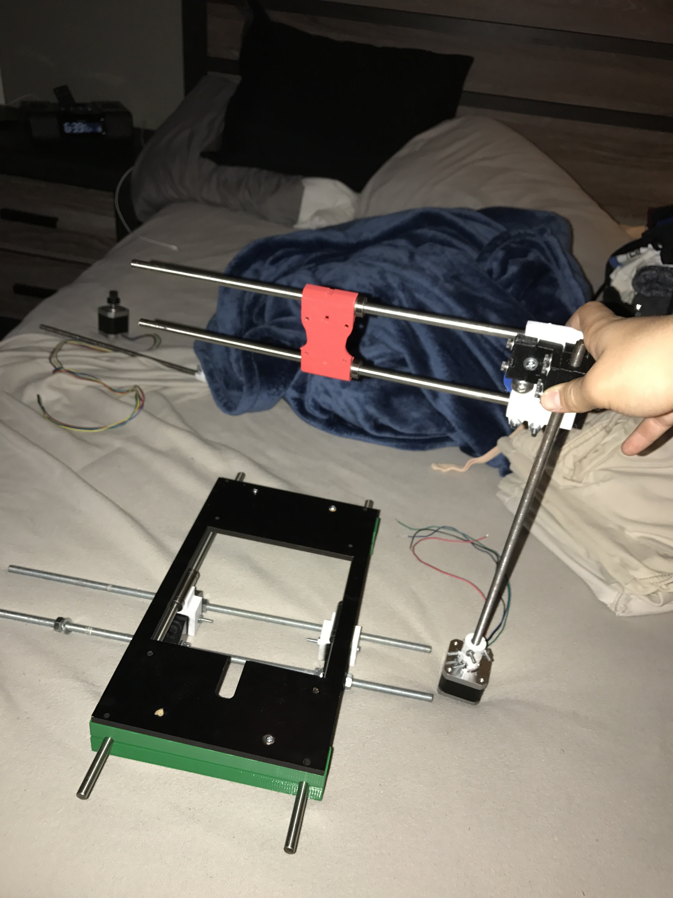
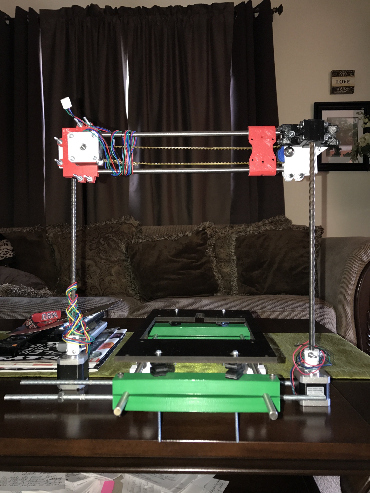
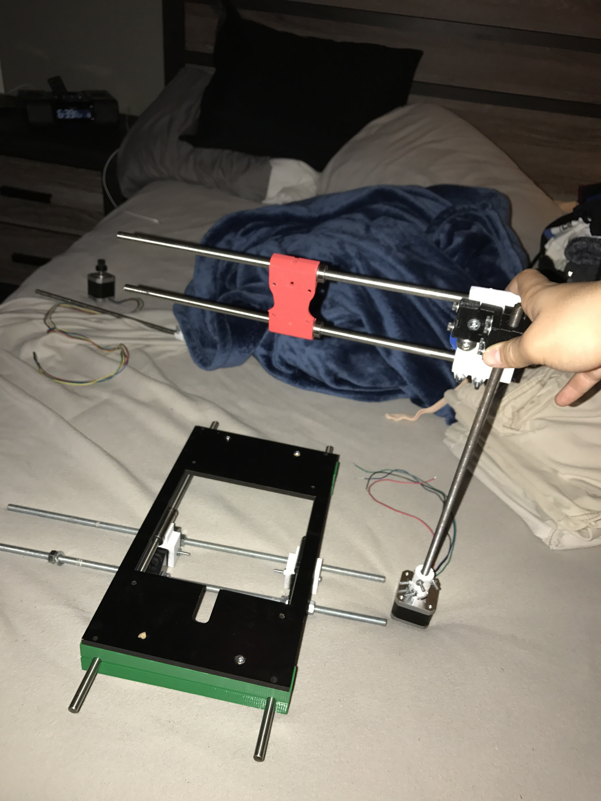
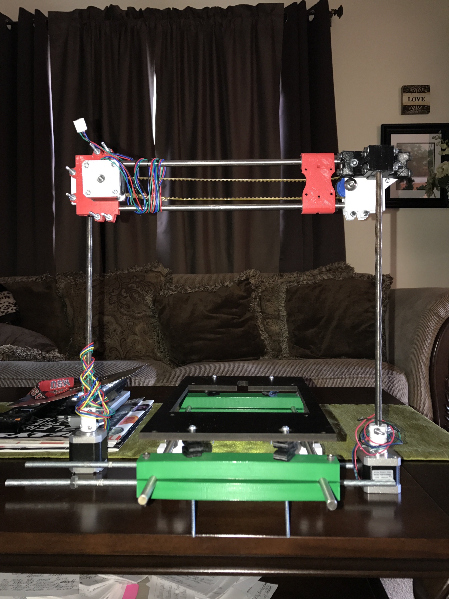
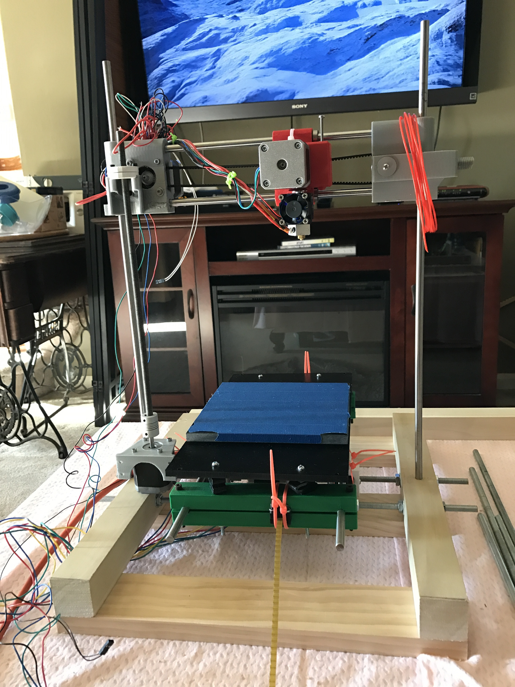
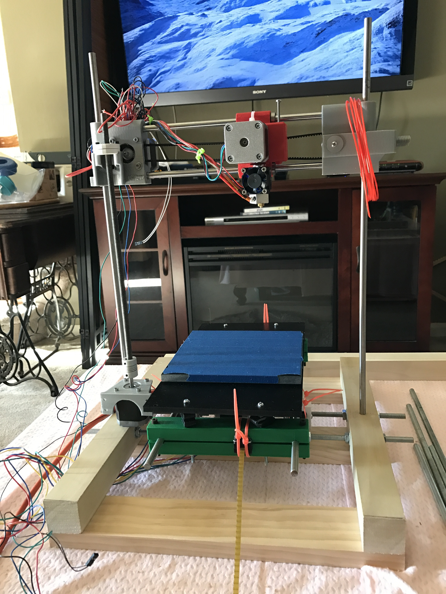

Base Plate Frame
and Z-Axis Rods
Y-Axis Motor
with Threaded Rod
X-Axis and
Y-Axis Carriage
Final Preparations Prior
to Combining the Three Axes
Revision of
Y-Axis Design
Bring Out the Power Tools
for Frame Assembly
Wooden Ladder
Frame Design
X and Y Axes
Installed on Frame
Heated Printing Bed Installed
and Wires Managed
RAMPS Controller Board Installed
with Secondary Ladder Frame
The Z-axis rod clamps were 3-D printed using
my own original design. They were tightened
around the two rods. The black baseplate frame
was salvaged from an older 3-D printer. The frame
was bolted to the clamps to create the z-axis carriage.
The threaded rod was inserted into a 3-D printed
axis coupler. The opposite end of the coupler hugged
the drive shaft of the stepper motor. Both ends
of the coupler were tightened.
The dual purposed pieces are assembled using
a mostly salvaged axis and 3-D printed pieces.
A threaded hole end cap allows the axis to move vertically,
while the stepper motor and belt move horizontally.
The three axis mock-ups were positioned while
final estimations were made. "Measure twice,
cut once" is every engineer's motto. Some minor
adjustments were made to the original plans.
In structural integrity testing, flexion was
observed in the threaded y-axis rod. An
additional y-axis rod, motor, and coupler
unit was added to the opposite side for stabalization.
Safety measures are always considered
in the workshop. Safety glasses are worn
and a workshop buddy is present in case of emergency.
These are especially considered when using power tools.
The first part of the frame consists of two pieces of 2x2
cut to the same length, with three holes bored in each to
support the z and y axes. For stability, three,
1x4 cross beams connected the two main, wooden rails.
The y-Axis lifting motor and threaded rod system was
strategically screwed to the frame using a 3-D printed bracket.
The x/y Axis carriage slid on the two support rods.
Finally, the threaded y-axis rod was twisted into the carriage.
A recycled, heated print bed was nestled into the base
plate frame. Its wires were run underneath the whole system
and out to the side. Similarly, all of the motor
and extruder wires were run down and over to the same side.
A second, wooden ladder, frame piece was built to house the
printer's control board. Using 3-D printed brackets, the two frame
were bolted together. All the wires were plugged into the RAMPS
board and it was fastened to the bottom-most support beams.
 





 
